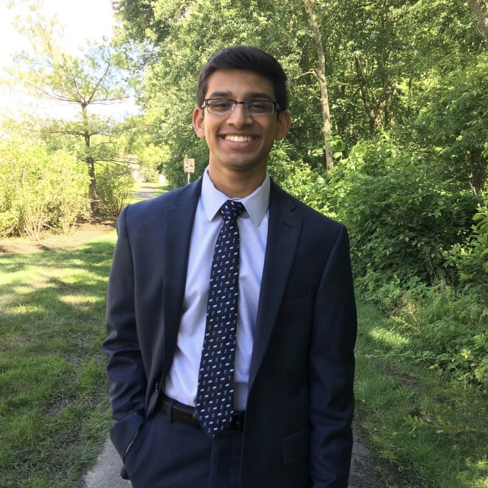
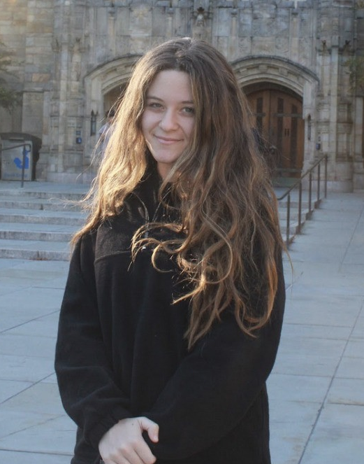

Science Internship Program Students
Atirath Dhara, Kaela McConnell, and Jurij Waite worked with me through the UC Santa Cruz Science Internship Program on a redshift survey of compact galaxies and quasars behind M31. They used SPLASH spectra from Keck/DEIMOS to identify background sources through redshifted emission lines and spectral features such as Ca H+K absorption and intergalactic absorption.
This was a program targeted to provide high school students a real taste of research with real spectra, and multi-wavelength analysis. Their work was presented at the 2018 American Astronomical Society meeting.